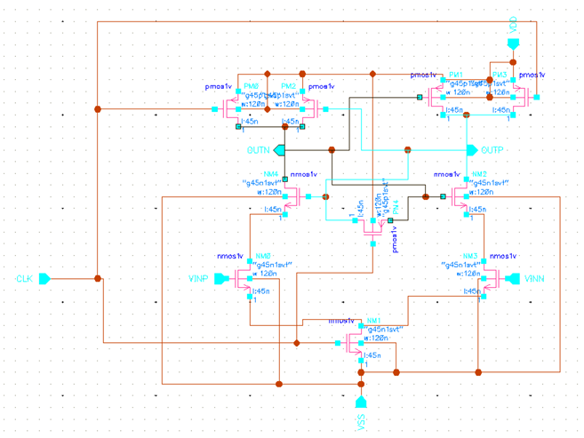
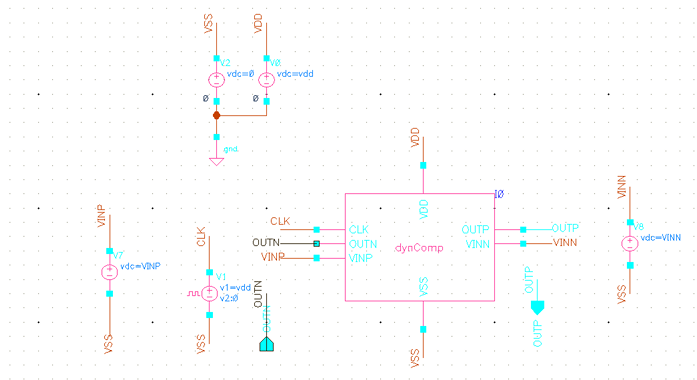
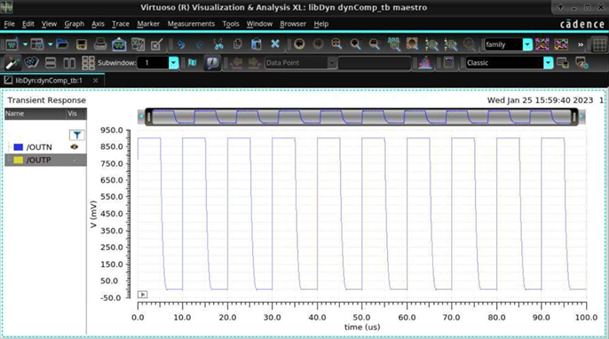
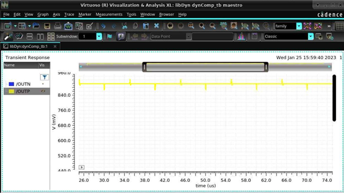
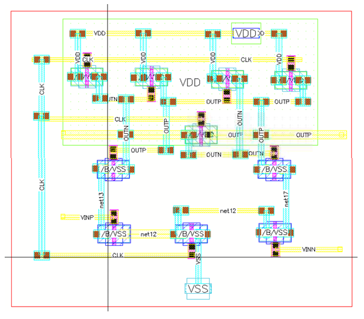

This project is the design of a dynamic comparator in Virtuoso. It includes the schematic, as well as the layout and waveforms.
The schematic of the circuit can be seen below, along with the testbench schematic.
 A transient simulation is set up in SPICE, to validate the waveforms. The values were set at VINP=0.2V, VINN=0.1V, and the clock has a period of 10us. At the high levels of the clock, the comparator is enabled, and VOUTP=VDD, VOUTN=0, since VINP>VINN. At the low levels of the clock, all outputs are 0. VOUTP does not reach levels VDD and GND fully.
 The layout is designed using the GPDK045 process, which is used for educational purposes and is not commercial. Metals 1 and 2 were used for routing, and via groups of 2 or 3 were used for redundancy.
